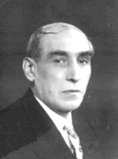

Historia Familiar
Los padres y los abuelos de Gerardo Masana, todos ellos catalanes, tuvieron mucho que ver en su formación artística y cultural.
Sus dos abuelos (el materno y el paterno) fueron actores. Uno de ellos fue actor cómico y el otro actor dramático y director teatral. Y llegaron a compartir varias obras teatrales. Eso hizo que Gerardo tomara con naturalidad, desde chico, la convivencia en un mismo escenario de las dos caras de la dramaturgia: la tragedia y la comedia. Esa influencia se vería plamada en 1965, cuando Gerardo compuso la Cantata Modatón (posteriormente Laxatón), considerada como obra fundacional de Les Luthiers.
En esa obra, Gerardo combinó la seriedad de una cantanta al estilo de Bach, con la letra del prospecto de un laxante, y la extravagancia de una orquesta de instrumentos informales.
Enrique Masana
 El abuelo paterno de Gerardo, nació en la ciudad catalana de Villanueva y Geltrú en 1878. Ya desde chico tuvo una fuerte vocación por el teatro. Y si bien la sastrería fue su medio de vida, al despuntar el nuevo siglo se había transformado en un “cómico de la legua”, como se llamaba a los actores que, al no tener cabida en los elencos teatrales oficiales, sólo podían trabajar en compañías nómades que, por prescripción del gobierno, debían funcionar al menos a una legua de distancia de cualquier población importante, para no competir con los artistas oficiales.
Enrique Masana llegó a la Argentina alrededor de 1904, en busca de trabajo, y al poco tiempo hizo viajar también a su esposa y a sus hijos.
En Buenos Aires se contactó con el Centro Catalán (actualmente Casal de Cataluña), que por aquella época desarrollaba una fuerte actividad artística. Se sumó a su elenco teatral y participó en varias obras.
Gregorio Silvestre
 El abuelo materno de Gerardo, nació en Barcelona en 1879. Allí desarrolló una
gran afición por la literatura y el teatro, y demostró además
vocación de artesano.
El abuelo materno de Gerardo, nació en Barcelona en 1879. Allí desarrolló una
gran afición por la literatura y el teatro, y demostró además
vocación de artesano.
De joven, ingresó como aprendiz a una herrería de Barcelona, poco antes de que ésta realizara los balcones de La Pedrera, el célebre edificio diseñado por Antonio Gaudi. Gregorio siempre se sentiría orgulloso de haber tratado personalmente con el famoso arquitecto. “Era un hombre muy temperamental”, decía.
En 1915 llegó a la Argentina. Su familia lo seguiría ocho meses más tarde. En Buenos Aires se acercó al Centro Catalán, y de allí en más, el resto de su vida estuvo ligada a dicha entidad.
En el teatro del Centro Catalán, actualmente conocido como Margarita Xirgu, se puso en escena obras de importantes autores catalanes y compartió el elenco en algunas obras con la actriz Margarita Xirgu. Por ejemplo, “Mar y cielo”, de Angel Guimerá (1938), obra donde, además de actuar, Gregorio ejerció la dirección.
En el Centro Catalán, Gregorio conoció a Enrique Masana y trabó una gran amistad con él. Actuaron juntos en varias obras; como actores se complementaban a la perfección. Gregorio era actor dramático mientras que Enrique prefería los papeles cómicos.
Pronto dejarían de ser amigos y pasarían a ser familiares a través del casamiento de sus hijos, Juan Masana y Antonia Silvestre, los padres de Gerardo.
Juan Masana Salas
 El padre de Gerardo llegó a la Argentina desde Barcelona a los cuatro
años, en 1907. Le encantaba leer, y en cuanto juntaba cinco centavos
iba a comprar alguno de los libros de la editorial Saturnino Calleja, reconocidos
hoy como precursores e impulsores de la literatura infantil española.
El padre de Gerardo llegó a la Argentina desde Barcelona a los cuatro
años, en 1907. Le encantaba leer, y en cuanto juntaba cinco centavos
iba a comprar alguno de los libros de la editorial Saturnino Calleja, reconocidos
hoy como precursores e impulsores de la literatura infantil española.
De adulto, se formó una biblioteca con los temas más variados. En su casa abundaban las enciclopedias y los libros de arte y música, que siempre estuvieron a disposición de sus hijos.
Juan desarrolló una especial afición por la ciencia-ficción. Logró reunir una importante biblioteca, que incluía las primeras ediciones en español de los principales clásicos del género. Parte de esa colección fue destruida años más tarde por la inundación del sótano donde se guardaba, pero varios volumenes sobrevivieron. A principios de los años noventa fueron donados por su nieto, Sebastián Masana, a la biblioteca del Círculo Argentino de Ciencia-ficción y Fantasía (CACyF).
También coleccionó discos sobre los más diversos géneros, especialmente música clásica y jazz. Su entusiasmo por la música lo llevo a formar parte del coro del Club Gimnasia y Esgrima, paso previo a la creación del coro de la Asociación Wagneriana, del cual fue miembro fundador.En 1931 se casó con Antonia Silvestre.
Antonia Silvestre
 La madre de Gerardo llegó a la Argentina desde Barcelona en 1916,
con sólo diez años.
La madre de Gerardo llegó a la Argentina desde Barcelona en 1916,
con sólo diez años.
A los 14 comenzó a estudiar piano en el Centro Catalán, donde se recibió de profesora, aunque nunca ejerció la docencia. Intervino en algunas zarzuelas como integrante del coro del Centro Catalán.
A Antonia le gustaba mucho leer y su madre siempre la retaba porque se quedaba leyendo hasta muy tarde. “Una de sus obras favoritas era Casa de Muñecas, de Ibsen”, recuerda su hija Nuri, la hermana de Gerardo, quien le debe su nombre al personaje protagónico femenino de esa obra, Nora Helmer.
© Copyright 2004, Sebastián Masana.